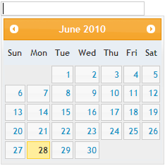

Besides the Syncfusion themes, Date Picker also supports all the default jQuery themes.
Properties
|
Name |
Description |
Type of the property |
Value it accepts |
Dependency |
|
jQueryAutoFormat
|
Used to define the jQuery themes |
enum
|
jQuerySkins.Smoothness, jQuerySkins.UILightness, jQuerySkins.UIDarkness, jQuerySkins.UIStart, jQuerySkins.Redmond, jQuerySkins.Cupertino, jQuerySkins.SouthStreet, jQuerySkins.Blitzer, jQuerySkins.Humanity, jQuerySkins.HotSneaks, jQuerySkins.ExciteBike, jQuerySkins.Vader, jQuerySkins.DotLuv, jQuerySkins.MintChoc, jQuerySkins.BlackTie, jQuerySkins.Trontastic, jQuerySkins.SwankyPurse, |
NA |
Using Builder
The following section explains the setting of jQuery themes for the date picker using builder.
1. In View, invoke the date picker helper followed by the the jQueryAutoFormat method with desired theme as argument.
|
[ASPXView[aspx]
<%=Html.Syncfusion().DatePicker("myDatPicker") .jQueryAutoFormat(jQuerySkins.UILightness)%>
|
|
View[cshtml]
@{ Html.Syncfusion().DatePicker("myDatPicker") .jQueryAutoFormat(jQuerySkins.UILightness).Render();} |
2. Build and run the application.
Using Properties Model
The following section explains the setting of jQuery themes for the date picker using the Properties model.
1. In the Controller, create an instance of the DatePickerModel, set the jQueryAutoFormat property and pass the instance through view specific data to View as given below.
|
[Controller]
public ActionResult Index() { //create an instance of DatePickerModel DatePickerModel myModel = new DatePickerModel(); myModel.jQueryAutoFormat = jQuerySkins.UILightness;
//pass the instance through view data to the view ViewData["myDatePicker"] = myModel; return View(); }
|
2. In View, invoke the date picker helper with the view data key as the Control ID.
|
View[aspx]
<%=Html.Syncfusion().DatePicker("myDatePicker") %> |
|
View[aspx]
@{ Html.Syncfusion().DatePicker("myDatePicker").Render(); } |
3. Build and run the application.
The output is shown in the following screenshot.

Figure 110: Date Picker with jQuery themes